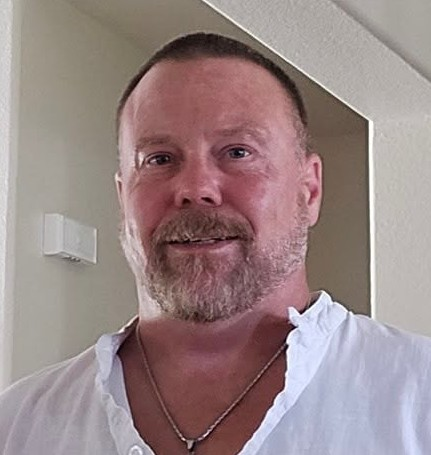
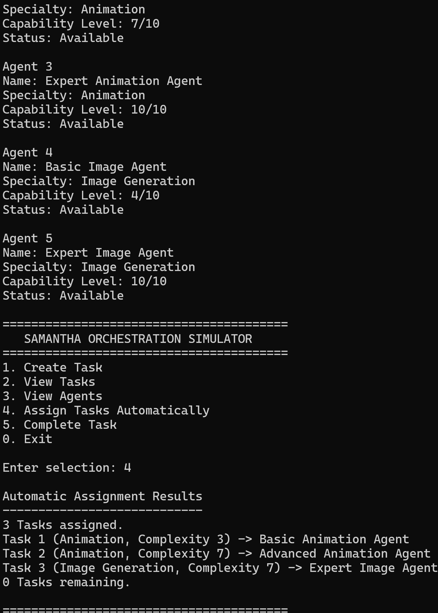

Programming
C++, HTML, CSS, object-oriented programming, classes, functions, vectors, references, loops, and input validation.
SOFTWARE DEVELOPMENT | C++ | AI SYSTEMS
I'm a software development student at Full Sail University with a passion for artificial intelligence, simulation, automation, and solving real-world problems through technology. I enjoy building software that makes complex systems more efficient, accessible, and useful.

About Me
I'm a software development student at Full Sail University based in Beaumont, Texas. My background includes operating a construction business, where planning, problem-solving, project management, and attention to detail are essential.
I'm bringing those same skills into software development. My interests include artificial intelligence, intelligent automation, simulation systems, and applications that coordinate multiple components to accomplish complex tasks.
My development experience includes designing C++ applications, working with object-oriented programming, debugging, and using GitHub to organize projects and track development.
My long-term goal is to continue developing practical software systems while strengthening my understanding of software architecture, algorithms, and efficient application design.
C++, HTML, CSS, object-oriented programming, classes, functions, vectors, references, loops, and input validation.
Visual Studio, Git, GitHub, GitHub Projects, GitHub Issues, branches, commits, and Pull Requests.
AI systems, task orchestration, automated scheduling, debugging, software architecture, testing, and maintainable code.
Featured Development
My featured project demonstrates how separate software components can cooperate to manage tasks and make automated decisions.

C++ Console Application
SAMANTHA Orchestration Simulator is a C++ application that demonstrates how multiple specialized software agents can be coordinated through an automated task-management system.
Users create tasks by selecting a category and complexity level. The Orchestrator evaluates available agents and automatically assigns each task to the most appropriate qualified agent.
One of my biggest challenges was expanding the simulator from a simple program managing individual objects into a system coordinating multiple tasks and agents.
I also needed to improve input validation and prevent duplicate assignments. Through testing, instructor feedback, and refactoring, I improved the program's reliability while keeping the code organized and maintainable.
This project strengthened my understanding of C++, classes, objects, vectors, references, debugging, and program structure.
My biggest improvement was learning to manage software development through GitHub. I gained practical experience with branches, Issues, Project Boards, commits, and Pull Requests.
C++, Visual Studio, Git, GitHub, object-oriented programming, vectors, references, and exception handling.
Contact
I'm interested in software development, artificial intelligence, automation, and opportunities to collaborate on innovative technical projects.
You can explore my development work on GitHub or review my professional résumé.